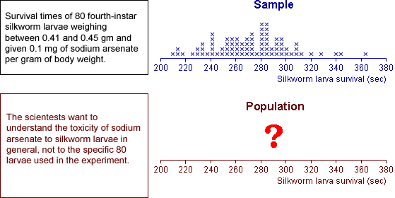
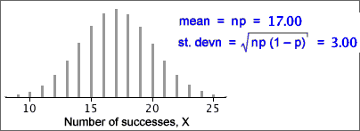
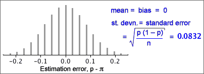

If you don't want to print now,
Inference about a population
Data are usually collected to provide information about some population or process underlying the data. The data are often modelled as a random sample from this population.

Comparing beers
A brewery wishes to assess the effect of an additive on the alcohol content of its premium beer. Several batches are brewed, both with and without the additive, and the alcohol content of each batch is recorded.
Here there are two underlying populations — distributions describing the alcohol content of beer with and without the additive. The shapes of these distributions could potentially differ in various ways, but the brewer is mostly interested in whether the additive changes the mean alcohol content:
The sample means provide estimates of the corresponding population means and are the basis for answering the question.
The difference in sample means is an estimate of the difference between the unknown population means.
Error in an estimate
When we use a summary statistic from a random sample to estimate a population parameter, the estimate will usually not be exactly the same as the parameter. The error is the difference between the parameter and its estimate.
| Parameter | Sample statistic | Error |
|---|---|---|
| population mean, µ | sample mean, |
|
| population proportion, π | sample proportion, p | p - π |
Silkworm poisoning
Silkworms must be killed after spinning their cocoons since the silk is damaged when the moths break free. An experiment was conducted to estimate the mean survival time of silkworm larvae after poisoning with sodium arsenate.
Since we are not interested in the specific 80 silkworms, we estimate that the population mean survival time is 272.6 seconds.
How big is the estimation error likely to be?
Error distribution
When a sample statistic (such as  or p ) is used
to estimate a population parameter, (µ or π)
there is an error,
or p ) is used
to estimate a population parameter, (µ or π)
there is an error,
error = (estimate - parameter )
Since the error depends on random sample data, it is a random quantity and has a distribution,
Although we cannot determine the actual error when there is only a single sample, it is often possible to find properties of its distribution.
For many types of estimate, we can find the error distribution or an approximation to it.
Target of small errors
Consider two possible sample statistics that could be used to estimate the centre of a symmetric population distribution — the sample mean and sample median. For each, there is an error,
error for mean =  - µ
- µ
error for median = median - µ
The best estimator will be the one whose estimation erro is usually "closer to zero". This corresponds to two desirable characteristics of the error distribution.
Centred on zero
Ideally, we want the error distribution to be centred on zero. Such an estimator is called unbiased.
Sample means and proportions are unbiased estimators of the corresponding population parameters.
Small spread
Ideally, we also want error distribution to be tightly concentrated on zero — i.e. to have a small spread.

We call the standard deviation of the error distribution the standard error of the estimator. We ideally want an estimator with a small standard error.
standard error = standard deviation of the error
Note also that
standard error = standard deviation of the estimator
so a good estimator is one with a small standard deviation.
Describing accuracy with an interval estimate
Reporting a single value as a parameter estimate (a point estimate) does not convey any information about the estimator's accuracy — i.e. the likely size of the estimation error.
It is better to give an interval of values within which we are confident that the parameter will lie — an interval estimate.
Will an interval estimate include the actual parameter value?
If an interval estimate is too narrow, there will be very little chance of it containing the true parameter value, but intervals that are too wide do not convey much information.

We will later describe how to quantify this idea of "confidence".
Distribution of the sample mean
A population mean, µ, is usually estimated by the mean from a random sample.

If the population standard deviation is σ,  has a distribution with
has a distribution with
 = μ
= μ
 =
= 
and is approximately normal if the population is normal or n is reasonably large.
Distribution of the estimation error
Since the error in the estimate is simply the sample mean minus a constant (µ), its distribution has the same shape but is centred on zero,
error =  − µ ~ normal (0,
− µ ~ normal (0,
 )
)

Since p is based on a random sample, it varies from sample to sample and has a distribution. The estimation error is:
error = p - π
Since π is unknown, we never know the value of the error, but we can find its approximate distribution. This will allow us to assess the likely size of the error.
Distribution of proportion
The proportion of successes from a random sample with probability π of success, p , has a distribution with mean and standard deviation
μp = π
σp = 
Distribution of estimation error
The estimation error is p - π and its distribution has the same shape as that of p, but is shifted to have mean zero. The bias and standard error are therefore
bias = μerror = 0
standard error = σerror = 
Standard error from data
Unfortunately, the formula for the standard error of p involves π, and this is unknown in practical problems. To get a numerical value for the standard error, we therefore replace π with our best estimate of its value, p .
bias = μerror = 0
standard error = σerror = 
Example
In a random sample of n = 36 values, there were x = 17 successes. Our best estimate of π is the sample proportion, p = 17/36. Using this estimate, the distribution of the number of successes in similar samples would be
X ~ binomial (n = 36, π = 17/36)

The proportion of successes in similar samples would have a scaled form of this distribution

and the error distribution would shift this to have mean zero:

From this error distribution, it is unlikely that our estimate of the proportion of successes (17/36) would be in error by more than 0.2.
Normal approximation to the error distribution
If the sample size, n, is large enough, the binomial distribution is approximately normal, so we have the approximation
error = p − π ~ normal (0,  )
)
Example

The error distribution (and standard error) give a good indication of how far our point estimate (0.554) will be from the true proportion of adults in the park.